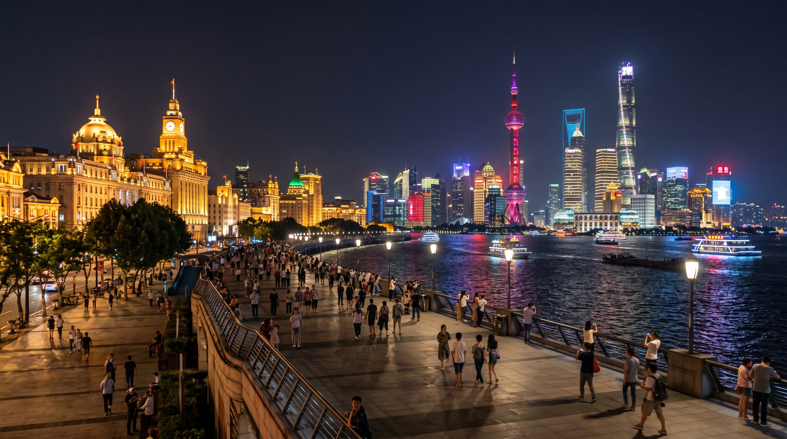
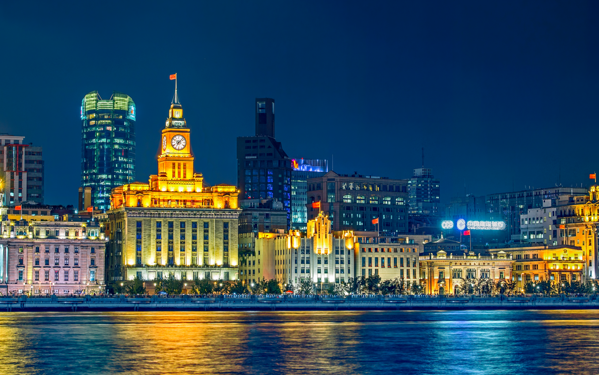
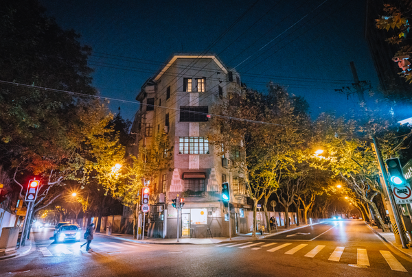

For International Travelers
Best for October & November • Fall Foliage Spots Included
By Muniao Homestay | China Tourism
2025 Shanghai Travel Guide: Honest tips after 5 visits! Must-read before visiting Shanghai in October & November (with autumn foliage spots)!

Morning: Yu Garden & City God Temple. Visit in the morning to avoid crowds. Yu Garden is a classic Jiangnan garden. The City God Temple area has lively local vibes. Take photos at the Nine‑Turn Bridge and try Nanxiang Xiaolongbao, pear syrup candy at the snack street.
Afternoon: Nanjing Road Pedestrian Street. Walk or take a short ride from Yu Garden to “No.1 Commercial Street in China”. Visit time‑honored shops such as No.1 Food Store and fun spots like the M&M’s flagship store.
Evening: The Bund. Arrive before 7 PM for the light show. Enjoy the Western‑style buildings on one side and the Lujiazui skyline on the other. Waibaidu Bridge is perfect for photos.

Morning: Start at Wukang Mansion, a famous landmark. Walk among old villas and lovely shops under plane trees.
Afternoon: Anfu Road. Walk naturally from Wukang Road to Anfu Road, full of delicate cafes, designer shops and artistic boutiques.
Evening: Xintiandi. A fashionable area rebuilt from Shikumen buildings, with many restaurants and bars.

Morning: Shanghai Museum (free, reservation required). The bronze, ceramics and calligraphy collections are world‑class.
Afternoon: Lujiazui. Visit Oriental Pearl, with a 259m fully transparent observation deck, the most classic landmark.
Yu Garden: The 400‑year‑old ginkgo tree turns golden, matching beautifully with ancient buildings.
Qingxi Country Park: Famous for “water forest” of dawn redwoods, turning rusty red in autumn, reflecting on the water.
Hunan Road: Plane tree leaves turn yellow and cover the whole street, very comfortable for walking.
Gongqing Forest Park: Top autumn spot with a limited chrysanthemum exhibition, giant peacock & castle shapes.
Yangpu Riverside: Pink muhly grass near Green Hill is in full bloom, like pink clouds.
Recommended Homestay: 【November】
Right downstairs from East Nanjing Road Pedestrian Street. Extra‑large round bathtub, Dyson hairdryer, cinema‑style projector. Smart AI home: just say “Xiao Ai” to control curtains and lights. 24h hot water, Xiaomi washing machine, high‑speed WiFi, tea bags, coffee, mineral water, first‑aid kit, sewing kit, makeup remover supplies – just like home!
Exclusive code: 9402641
Location: Huangpu District, suits 2 guests. Search the 7‑digit code on the Muniao Homestay app to book.